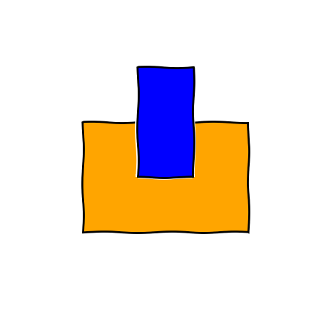
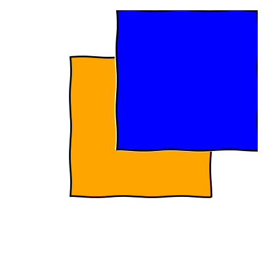
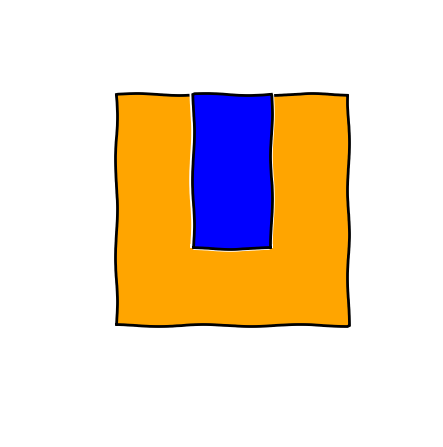
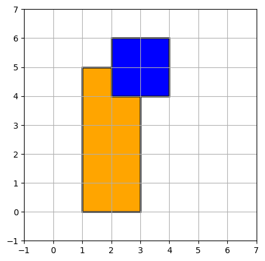
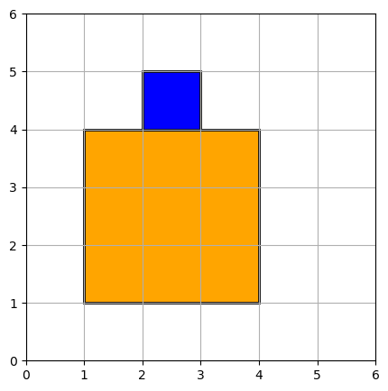
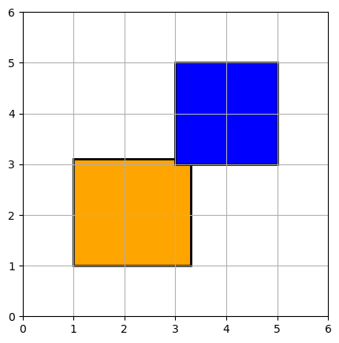

Testing, Testing,
One, Two, …
Testing
Why?

A few reasons
- laziness
- peace of mind
- runnable specification
- reproducible debugging
- code structure / modularity
- easier to modify
However…
Not a panacea
Trying to improve the quality of software by doing more testing is like
trying to lose weight by weighting yourself more often.
– Steve McConnell
How? - Unit test

but there are more!
Climate change
problem

another problem

What we got
A file
def oa(f1, f2): L1, B1, T1, R1 = f1 L2, B2, T2, R2 = f2 overL = max(L1, L2) overB = max(B1, B2) overR = min(R1, R2) overT = min(T1, T2) overH = (overT-overB) overW = (overR-overL) return overH*overW
Someone gives us this code and we are told it's run as:
oa((1.,1.,4.,4.),(2.,2.,3.,3.))
1.0
On the same file…
import matplotlib.pyplot as plt from matplotlib.path import Path import matplotlib.patches as patches def sf(f1, f2): def vertices(L,B,R,T): verts = [(L,B),(L,T),(R,T),(R,B),(L,B)] return verts codes = [Path.MOVETO, Path.LINETO, Path.LINETO, Path.LINETO, Path.CLOSEPOLY] p1 = Path(vertices(*f1), codes) p2 = Path(vertices(*f2), codes) fig = plt.figure() ax = fig.add_subplot(111) pa1 = patches.PathPatch(p1, facecolor='orange', lw=2) pa2 = patches.PathPatch(p2, facecolor='blue', lw=2) ax.add_patch(pa1) ax.add_patch(pa2) ax.set_xlim(0,5) ax.set_ylim(0,5) fig.show()
not all is lost

running it…
And if we call that function as we did before
sf((1.,1.,4.,4.),(2.,2.,3.,3.))

Let's try to understand

Step 1: Version Control and regression test
Version control
git init
git add overlap.py
git commit -m "Stuff as I got it from <insert supervisor here>"
Regression test
Create a new file called test_overlap.py
from overlap import oa def test_basic(): ''' Tests that basic example works ''' big_field = (1, 1, 4, 4) inner_field = (2, 2, 3, 3) assert oa(big_field, inner_field) == 1
Then we run the test as:
pytest
Step 2: Clean up
def overlap_area(field1, field2): left1, bottom1, top1, right1 = field1 left2, bottom2, top2, right2 = field2 overlap_left = max(left1, left2) overlap_bottom = max(bottom1, bottom2) overlap_right = min(right1, right2) overlap_top = min(top1, top2) overlap_height = (overlap_top - overlap_bottom) overlap_width = (overlap_right - overlap_left) return overlap_height * overlap_width
and for consistency
def show_fields(field1, field2): def vertices(left, bottom, right, top): verts = [(left, bottom), (left, top), (right, top), (right, bottom), (left, bottom)] return verts codes = [Path.MOVETO, Path.LINETO, Path.LINETO, Path.LINETO, Path.CLOSEPOLY] path1 = Path(vertices(*field1), codes) path2 = Path(vertices(*field2), codes) fig = plt.figure() ax = fig.add_subplot(111) patch1 = patches.PathPatch(path1, facecolor='orange', lw=2) patch2 = patches.PathPatch(path2, facecolor='blue', lw=2) ax.add_patch(patch1) ax.add_patch(patch2) ax.set_xlim(0,5) ax.set_ylim(0,5) fig.show()
Rerun test
$ pytest
...
E ImportError: cannot import name 'oa'
...
Step 3: Design tests
all inside

partial overlap

Think about other cases
overlap corner

just touching

just touching on the outside

no overlap

Step 4: Write the tests
all inside
Done already on test_basic
partial overlap

def test_partial_overlap(): ''' Tests when there's a partial overlap''' base_field = (1, 1, 4, 3) over_field = (2, 2, 3, 4) assert overlap_area(base_field, over_field) == 1
overlap corner

def test_corner_overlap(): ''' Tests when there's a partial overlap''' base_field = (1, 0, 3, 5) over_field = (2, 4, 4, 6) assert overlap_area(base_field, over_field) == 1
Run the tests
$ pytest
...
E assert -3 == 1
...
Find problem!
Look at overlap.py. Is there something different between what we are using to plot and to calculate the area?
just touching

def test_edge_touching(): ''' Test when there is an edge ''' base_field = (1, 1, 4, 4) over_field = (2, 2, 3, 4) assert overlap_area(base_field, over_field) == 2
touching opposite sides

def test_edge_touching(): ''' Test when there is an edge ''' base_field = (1, 1, 4, 4) over_field = (2, 1, 3, 4) assert overlap_area(base_field, over_field) == 3
touching on the outside

def test_outside_edge_touching(): ''' Test when they are touching on the outside ''' base_field = (1, 1, 4, 4) over_field = (2, 4, 3, 5) assert overlap_area(base_field, over_field) == 0
no overlap

def test_no_overlap(): ''' Test when they are not touching each other ''' base_field = (0, 0, 3, 3) over_field = (4, 4, 5, 5) assert overlap_area(base_field, over_field) == 0
Run the tests
$ pytest ... E assert 1 == 0 ...
Find problem!
Look at overlap_area().
overlap_left = max(left1, left2) # max(0, 4) => 4 overlap_bottom = max(bottom1, bottom2) # max(0, 4) => 4 overlap_right = min(right1, right2) # min(3, 5) => 3 overlap_top = min(top1, top2) # min(3, 5) => 3 overlap_height = (overlap_top - overlap_bottom) # 3 - 4 => -1 overlap_width = (overlap_right - overlap_left) # 3 - 4 => -1 return overlap_height * overlap_width # -1 * -1 => 1
Fixing the problem
overlap_height = max(0, overlap_top - overlap_bottom) # max(0, 3 - 4) => max(0, -1) => 0 overlap_width = max(0, overlap_right - overlap_left) # max(0, 3 - 4) => max(0, -1) => 0
Re-run the tests
Using decimals - does still work?

def test_floats(): ''' Test that still works when using floats ''' base_field = (1, 1., 3.5, 3.5) over_field = (3, 3, 5, 5) assert overlap_area(base_field, over_field) == 0.5 * 0.5
Using decimals - does really work?

def test_floats(): ''' Test that still works when using floats ''' base_field = (1, 1., 3.3, 3.1) over_field = (3, 3, 5, 5) assert overlap_area(base_field, over_field) == 0.3 * 0.1
Run the tests
$ pytest ... E assert 0.03000000000000001 == (0.3 * 0.1) ...
What's happening?
for i in range(10): print(i * 0.1)
0.0 0.1 0.2 0.30000000000000004 0.4 0.5 0.6000000000000001 0.7000000000000001 0.8 0.9
Read more: Python's documentation, The floating-point guide
Solve the problem
0.1 + 0.2 == approx(0.3, rel=1e-3)
What about negative coordinates?

def test_negative_basic(): ''' Tests that basic example works ''' big_field = (-1, -1, -4, -4) inner_field = (-2, -2, -3, -3) assert overlap_area(big_field, inner_field) == 1
Run the tests
$ pytest ... E assert 0 == 1
Solve the problem
- Give up and mention it on the documentation: "Only valid for positive coordinates"
big_field = (-1, -1, -4, -4)
Two options:
- Mention it in the documentation, and produce a meaningful error.
- Implement a fix and allow any order.
Negative tests
Let's throw an error if the user inputs the coordinates in the wrong order.
In overlap_area():
if (left1 > right1 or bottom1 > top1 or left2 > right2 or bottom2 > top2): raise ValueError(" Coordinates need to be entered (left, bottom, right, top)")
Documentation
Also is a good opportunity now to add some documentation to the function:
''' Calculates the area of overlapping fields from the coordinates of their corners. parameters ---------- field1: (tuple | list) of (int | float) Coordinates of the first field. Order should be: (left, bottom, right, top) field2: (tuple | list) of (int | float) Coordinates of the second field. Order should be: (left, bottom, right, top) Returns ------- area: int or float Area in the coordinates entered unit. '''
Fix the test!!
on test_overlap.py:
from pytest import approx, raises
and update test_negative_basic()
def test_negative_basic(): ''' Tests that basic example works ''' big_field = (-1, -1, -4, -4) inner_field = (-2, -2, -3, -3) with raises(ValueError, message=" Coordinates need to be entered (left, bottom, right, top) "): overlap_area(big_field, inner_field)
Step 5: Coverage
How much of our code is being tested?
If you've not installed pytest-cov do it now:
pip install pytest-cov
and then we can run it as:
pytest --cov=overlap
want more detailed information?
pytest --cov=overlap --cov-report html python -m http.server # C-c to kill it
You can add it into a pytest.ini so it always check.
[pytest] addopts = --cov=overlap --cov-report html
Step 6: Keep your documentation up to date
Write an example
Let's add an example on our documentation to see the power of doctest
Example ------- >>> from overlap import overlap_area >>> field_a = (1, 1, 4, 4) # position in kms as (x_0, y_0, x_1, y_1) >>> field_b = (2, 2, 3, 3) # smaller field inside field_a >>> overlap_area(field_a, field_b) 1
Run the test
python -m doctest overlap.py
Change the example to see what happens when it fails.
Add it to the pytest
Add addopts = --doctest-modules to the pytest.ini
[pytest] addopts = --cov=overlap --cov-report html --doctest-modules
Step 7: Other type of tests
Property based tests
Hypothesis generates tests automatically based on a property.

inside field is always the same area
Load hypothesis:
from hypothesis import given from hypothesis.strategies import lists, integers, composite
add a new strategy to generate coordinates:
@composite def coordinates(draw, elements=integers()): xs = draw(lists(elements, min_size=4, max_size=4)) xs[0], xs[2] = sorted([xs[0], xs[2]]) xs[1], xs[3] = sorted([xs[1], xs[3]]) return xs
and add the test:
@given(coordinates()) def test_full_inside(big_field): unit = 1 # In case the field generated is of height or width 1. if big_field[2] - big_field[0] < 2 or big_field[3] - big_field[1] < 2: unit = -1 other_field = [big_field[0] + unit, big_field[1] + unit, big_field[2] - unit, big_field[3] - unit] # define which one is the inner field inner_field = other_field if unit == 1 else big_field area_inner = (inner_field[2] - inner_field[0]) * (inner_field[3] - inner_field[1]) assert overlap_area(big_field, inner_field) == area_inner
Other examples
- Always outside ->
area == 0 - If distances between their sides are < 0 ->
area != 0
Test figures
pytest-mpl allows you to compare changes on figures.
@pytest.mark.mpl_image_compare def test_plot(): big_field = (1, 1, 4, 4) inner_field = (2, 2, 3, 3) fig = figure_fields(big_field, inner_field) return fig
It needs to run first to create a database of the images to compare in the future.
pytest --mpl-generate-path=baseline
and then afterwards
pytest --mpl
or add it to the pytest.ini.
Step 8: Automate it all
Continuous Integration


setup using Travis
Create a .travis.yml as explained in their guide.
language: python python: - "3.6" - "3.7-dev" # 3.7 development branch # command to install dependencies install: - pip install -r requirements.txt # command to run tests script: - pytest
Conclusions
SIRO problem
Sensible Input - Reasonable Output
Extra material
DRY
Don't Repeat Yourself
What we have
def test_basic(): ''' Tests that basic example works ''' big_field = (1, 1, 4, 4) inner_field = (2, 2, 3, 3) assert overlap_area(big_field, inner_field) == 1 def test_partial_overlap(): ''' Tests when there's a partial overlap''' base_field = (1, 1, 4, 3) over_field = (2, 2, 3, 4) assert overlap_area(big_field, inner_field) == 1
updated to
@pytest.mark.parametrize("big_field, inner_field, area", [ ((1, 1, 4, 4), (2, 2, 3, 3), 1), ((1, 1, 4, 3), (2, 2, 3, 4), 1), # Tests when there's a partial overlap ]) def test_overlap_cases(big_field, inner_field, area): ''' Tests that basic example works ''' assert overlap_area(big_field, inner_field) == area